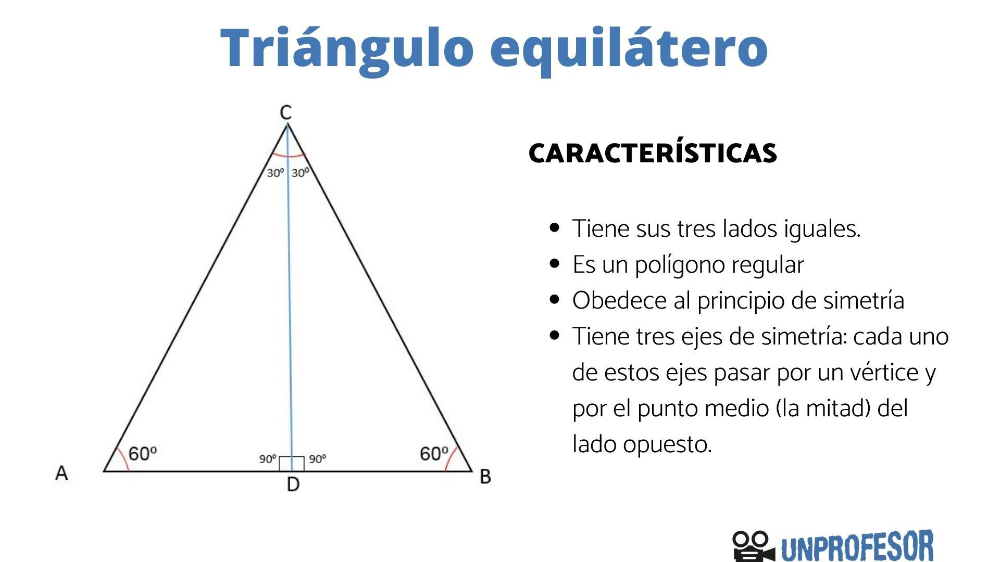

Triangulo Equilátero
¿Qué es?
El triángulo equilátero es un triángulo que todos sus lados tienen la misma longitud.
Esto implica también que todos sus ángulos sean iguales, es decir, cada ángulo mide 60 grados (recordemos que la suma de los ángulos de un triángulo es 180 grados y, por lo tanto, estos 180 grados se dividen en partes iguales por los tres ángulos).
Formula para calcular el area
El área de un triángulo equil/aacutetero se obtiene al multiplicar la base (a) por la altura (h) y dividir entre 2.
Calcular el perímetro
Una de las características del triángulo equilátero es que sus tres lados son iguales, por lo tanto, para calcular el perímetro corresponde a tres veces la longitud de uno de sus lados (a).
Perímetro= 3a
